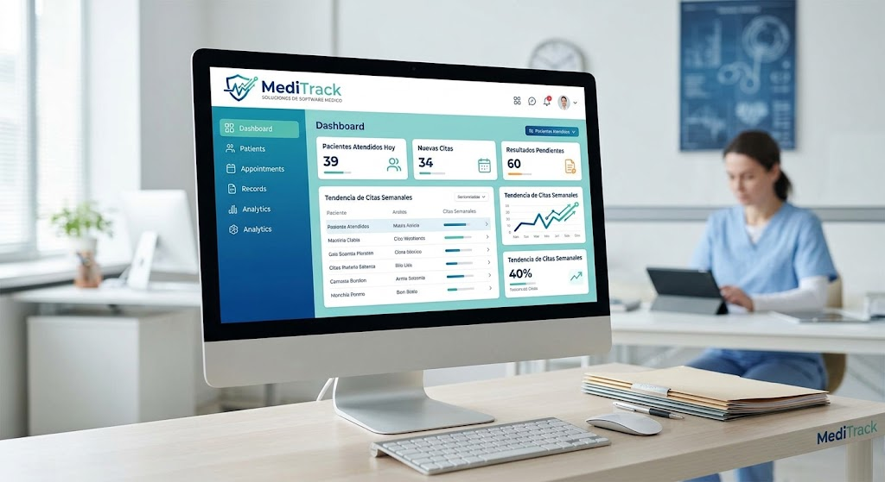

MediTrack
Un producto de software para el ambito medico
MediTrack es una solución de software diseñada para optimizar la gestión de información médica y mejorar la calidad de los servicios de salud.

Nuestro objetivo es poder conectar con el ministerio de salud de caba, para poder fucionar su base de datos con nuestrop software
Enlace a sigehos